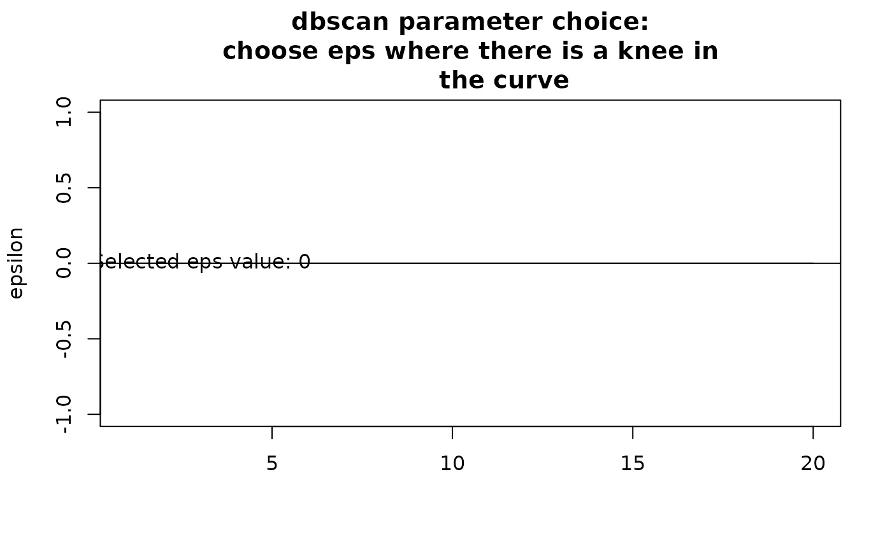
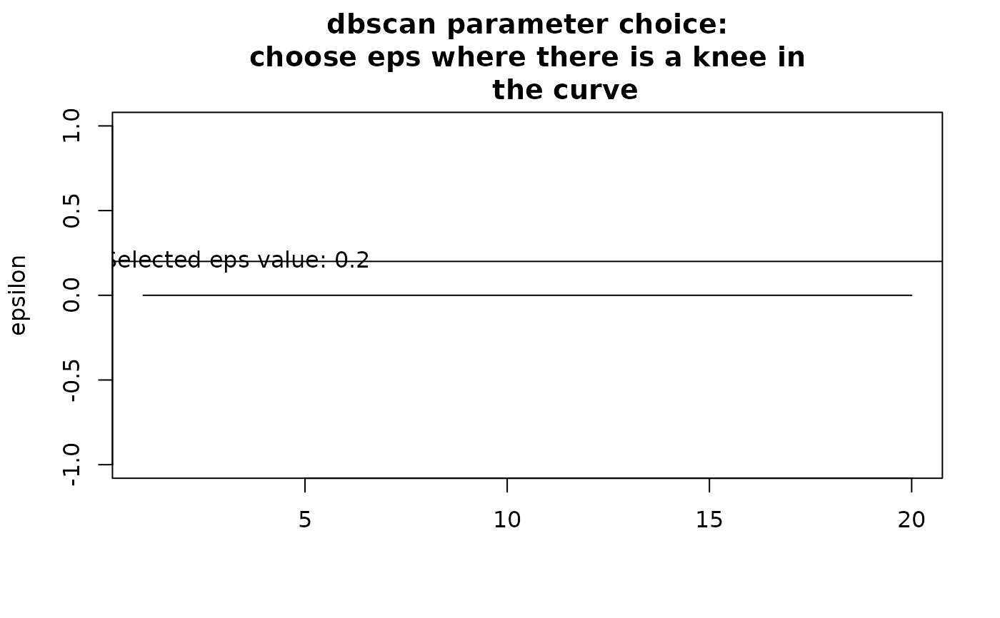
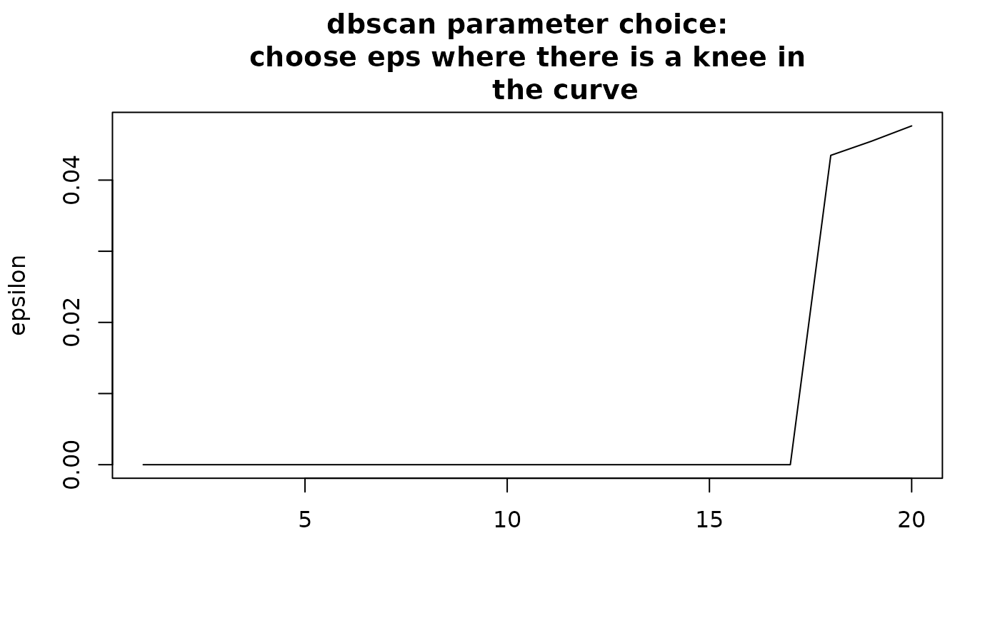
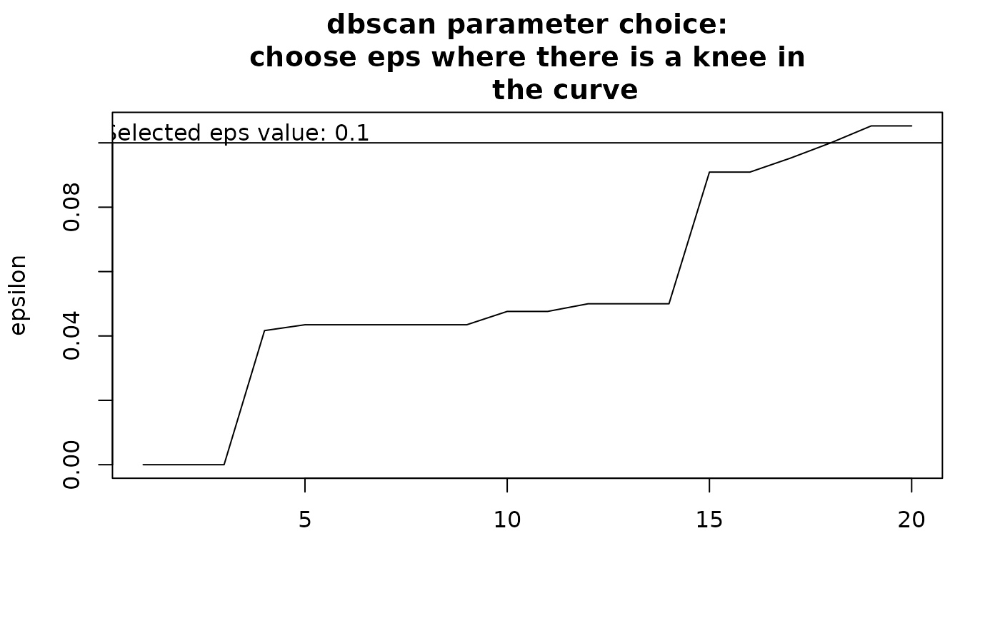
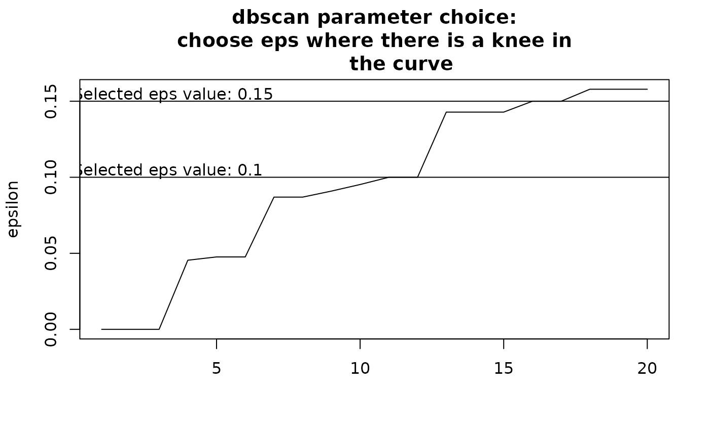
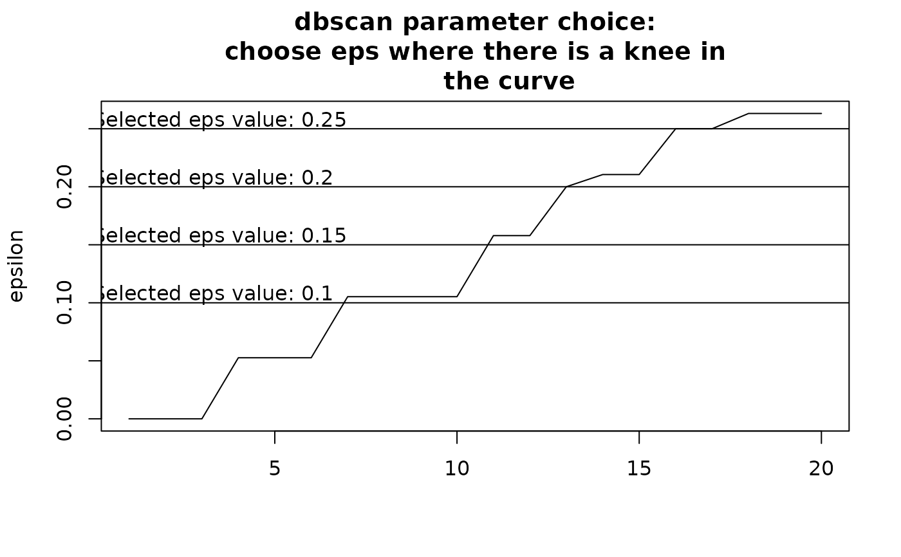

This function performs non hierarchical clustering on the basis of dissimilarity with Density-based Spatial Clustering of Applications with Noise (DBSCAN).
Usage
nhclu_dbscan(
dissimilarity,
index = names(dissimilarity)[3],
minPts = NULL,
eps = NULL,
plot = TRUE,
algorithm_in_output = TRUE,
...
)Arguments
- dissimilarity
the output object from
dissimilarity()orsimilarity_to_dissimilarity(), or adistobject. If adata.frameis used, the first two columns represent pairs of sites (or any pair of nodes), and the next column(s) are the dissimilarity indices.- index
name or number of the dissimilarity column to use. By default, the third column name of
dissimilarityis used.- minPts
a
numericvector or a singlenumericvalue specifying the minPts argument of dbscan::dbscan()). minPts is the minimum number of points to form a dense region. By default, it is set to the natural logarithm of the number of sites indissimilarity. See details for guidance on choosing this parameter.- eps
a
numericvector or a singlenumericvalue specifying the eps argument of dbscan). eps specifies how similar points should be to each other to be considered a part of a cluster. See details for guidance on choosing this parameter.- plot
a
booleanindicating if the k-nearest neighbor distance plot should be plotted.- algorithm_in_output
a
booleanindicating if the original output of dbscan should be returned in the output (TRUEby default, see Value).- ...
you can add here further arguments to be passed to
dbscan()(see dbscan).
Value
A list of class bioregion.clusters with five slots:
name:
charactercontaining the name of the algorithmargs:
listof input arguments as provided by the userinputs:
listof characteristics of the clustering processalgorithm:
listof all objects associated with the clustering procedure, such as original cluster objectsclusters:
data.framecontaining the clustering results
In the algorithm slot, if algorithm_in_output = TRUE, users can
find the output of
dbscan.
Details
The dbscan (Density-based spatial clustering of
applications with noise) clustering algorithm clusters points on the basis
of the density of neighbours around each data points. It necessitates two
main arguments, minPts, which stands for the minimum number of points to
identify a core, and eps, which is the radius to find neighbors.
minPts and eps should be defined by the user, which is not
straightforward.
We recommend reading the help in dbscan)
to learn how to set these arguments, as well as the paper
(Hahsler et al., 2019). Note that clusters with a value of 0
are points which were deemed as noise by the algorithm.
By default the function will select values for minPts and eps. However,
these values can be inadequate and the users is advised to tune these values
by running the function multiple times.
Choosing minPts: how many points should be necessary to make a cluster? i.e., what is the minimum number of sites you expect in a bioregion? Set a value sufficiently large for your dataset and your expectations.
Choosing eps: how similar should sites be in a cluster? If eps is
too small, then a majority of points will be considered too distinct and
will not be clustered at all (i.e., considered as noise)? If the value is
too high, then clusters will merge together.
The value of eps depends on the minPts argument, and the literature
recommends to choose eps by identifying a knee in the k-nearest neighbor
distance plot. By default
the function will try to automatically find a knee in that curve, but the
result is uncertain, and so the user should inspect the graph and modify
dbscan_eps accordingly. To explore eps values, follow the
recommendation by the function when you launch it a first time without
defining eps. Then, adjust depending on your clustering results.
References
Hahsler M, Piekenbrock M & Doran D (2019) Dbscan: Fast density-based clustering with R. Journal of Statistical Software, 91(1), 1–30.
Author
Boris Leroy (leroy.boris@gmail.com)
Pierre Denelle (pierre.denelle@gmail.com)
Maxime Lenormand (maxime.lenormand@inrae.fr)
Examples
comat <- matrix(sample(0:1000, size = 500, replace = TRUE, prob = 1/1:1001),
20, 25)
rownames(comat) <- paste0("Site",1:20)
colnames(comat) <- paste0("Species",1:25)
dissim <- dissimilarity(comat, metric = "all")
clust1 <- nhclu_dbscan(dissim, index = "Simpson")
#> Trying to find a knee in the curve to search for an optimal eps value...
#> NOTE: this automatic identification of the knee may not work properly
#> if the curve has knees and elbows. Please adjust eps manually by
#> inspecting the curve, identifying a knee as follows:
#>
#> /
#> curve /
#> ___________/ <- knee
#> elbow -> /
#> /
#> /

clust2 <- nhclu_dbscan(dissim, index = "Simpson", eps = 0.2)

clust3 <- nhclu_dbscan(dissim, index = "Simpson", minPts = c(5, 10, 15, 20),
eps = c(.1, .15, .2, .25, .3))



